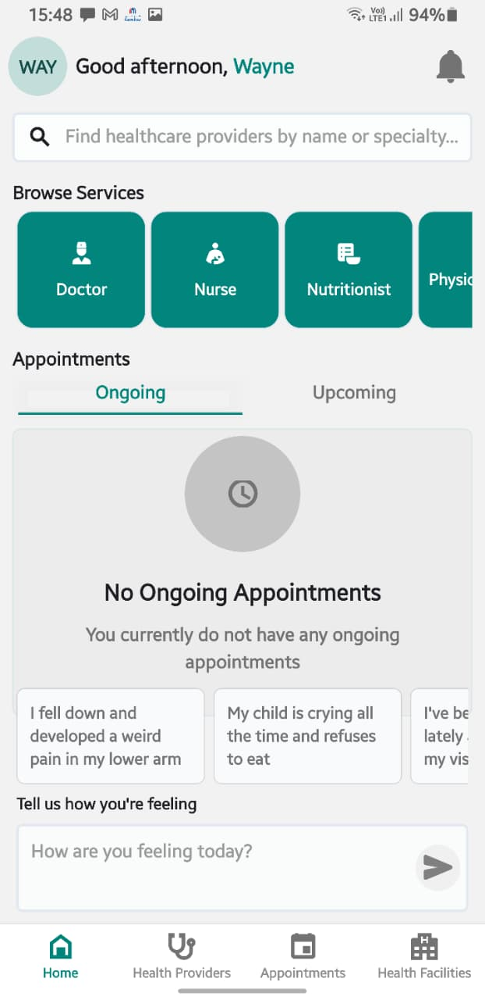

Rastuc Technologies — full-stack clinical platform
~45%smaller API payloads via typed GraphQL resolvers
< 180 msaverage query response time
15+core clinical screens shipped
< 1.2 sview load on unstable 3G/4G


- Role
- Full-Stack & Mobile Engineer (Flutter / GraphQL)
- Problem
- Clinicians need reliable patient data entry where connectivity is unreliable, across three distinct user roles — patients, practitioners and clinic administrators.
- What I built
- Built and maintained 15+ core clinical screens in Flutter alongside backing GraphQL queries, mutations and relational schemas. Replaced over-fetching REST patterns with typed resolvers, cutting mobile payloads by ~40–55%. Implemented local caching and reactive state sync so critical views load in under 1.2 s even on unstable 3G/4G connections. Engineered unified role-based views across 3 user types covering appointments, medical passports and billing.